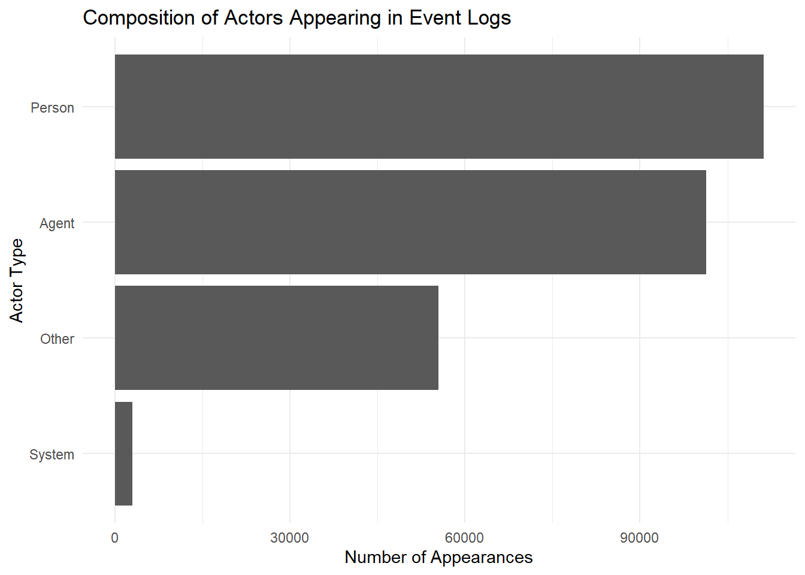
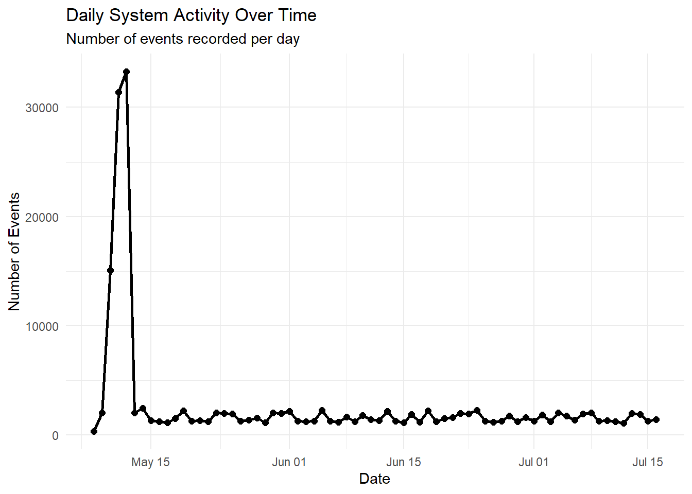
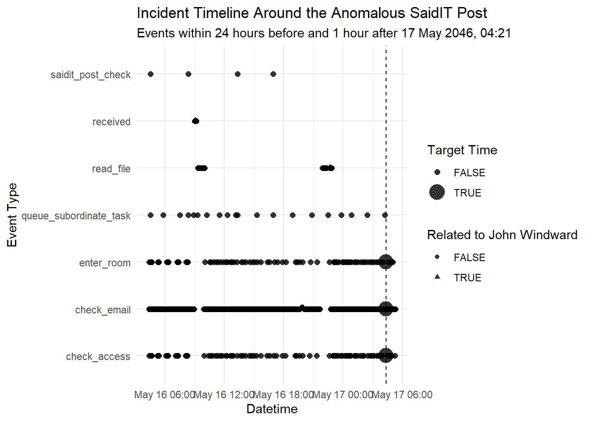
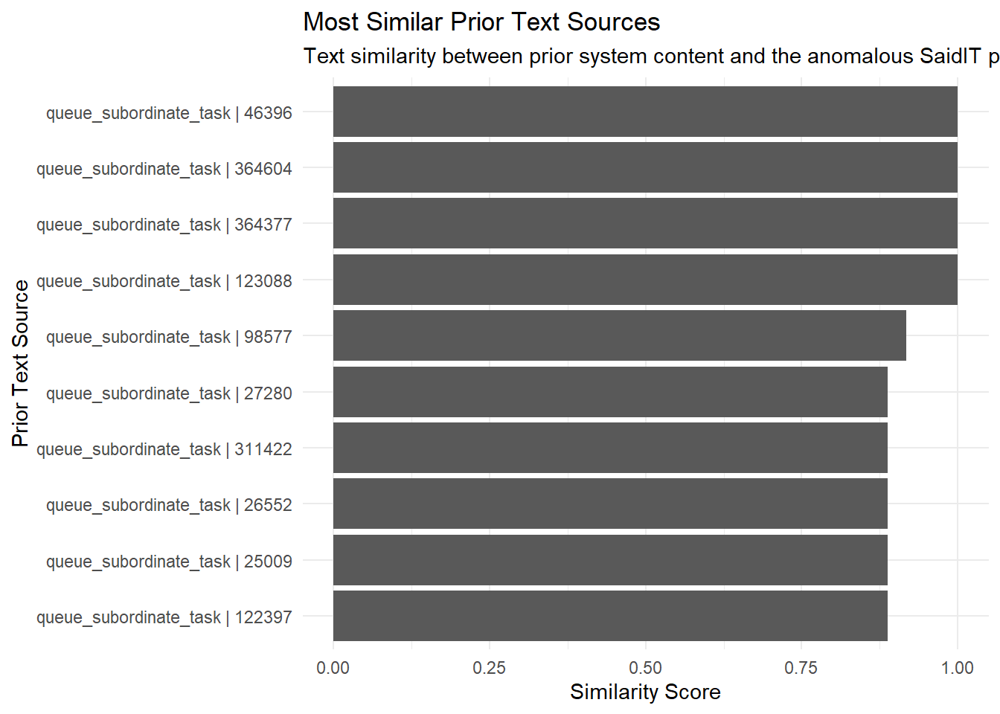
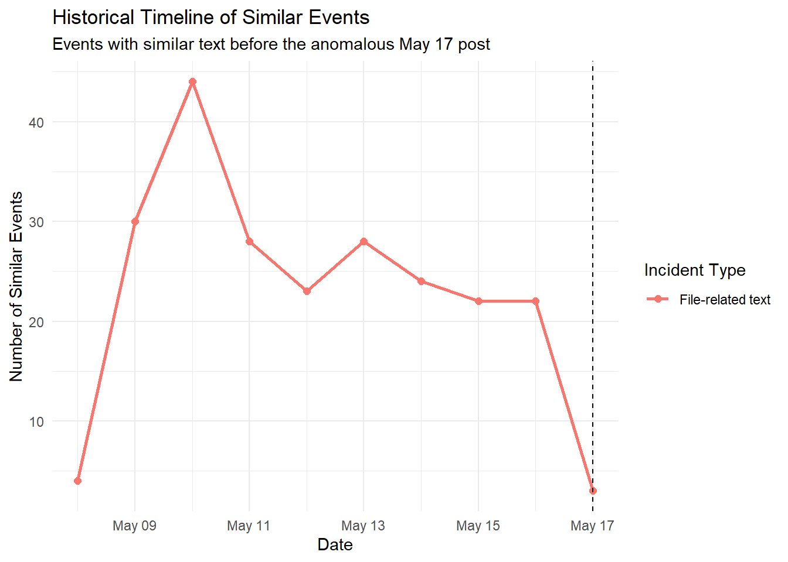
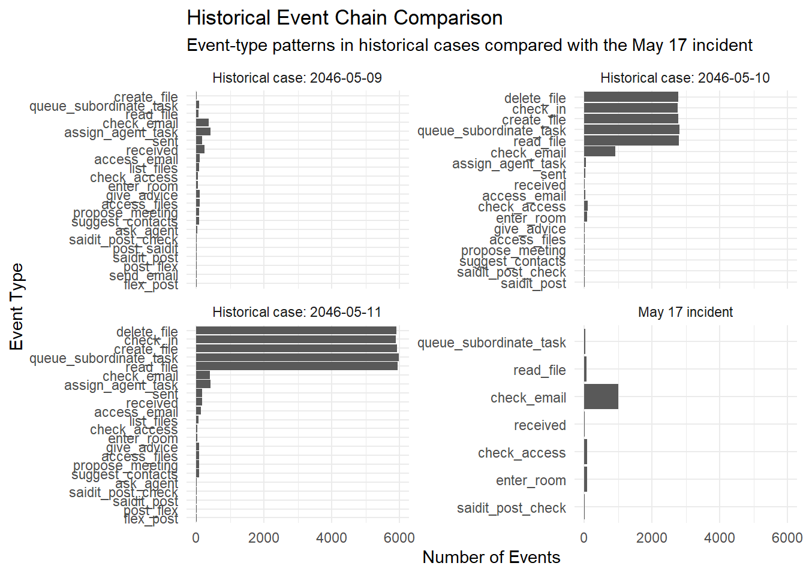

pacman::p_load(
tidyverse,
jsonlite,
lubridate,
igraph,
tidygraph,
ggraph,
DT,
patchwork,
ggrepel,
stringdist,
tidytext,
knitr,
kableExtra
)Take Home Exercise 2
Overview
Background
We investigate an anomalous SaidIT post made by John Windward on 17 May 2046 at 4:21 am. The post appears to have been published in an unrelated forum, suggesting malfunctioning behaviour. The objective is to reconstruct the sequence of events leading to the post, determine the origin and meaning of its contents, identify if similar incidents have occurred before and recommend an intervention to reduce the likelihood of its recurrence.
Questions to address
How was the anomalous SaidIT post created?
What is the origin and meaning of the post contents?
Have similar incidents occurred before?
What intervention point would most effectively prevent future occurrences?
Methodology
This analysis will include the following below:
Data preparation & wrangling
↓
Event Log Analysis
↓
Network Construction
↓
Baseline System Behaviour
↓
Anomalous Chain Reconstruction
↓
Content Origin Analysis
↓
Historical Comparison
↓
Intervention Analysis
Setup
Loading data
Event log
mc2_raw <- fromJSON(
"MC2 data/VAST_Challenge_2026_MC2/MC2_data.json",
simplifyVector = FALSE
)Organisation chart
org_raw <- fromJSON(
"MC2 data/VAST_Challenge_2026_MC2/org_chart.json"
)Data wrangling
Preparing Event data
events <- tibble(
event = mc2_raw$events
) |>
unnest_wider(event)
glimpse(events)Rows: 185,147
Columns: 5
$ short_name <chr> "sent", "propose_meeting", "access_email", "assign_agent_ta…
$ parties <list> ["person:isaac_mast", "person:levi_signal"], ["person:levi…
$ when <dbl> 2409423492, 2409423542, 2409423545, 2409423565, 2409423577,…
$ details <list> ["person:isaac_mast", "person:levi_signal", "calendar: mee…
$ id <int> 15246, 15249, 15251, 15252, 15259, 15264, 15266, 15272, 152…events <- events |>
mutate(
datetime = as.POSIXct(
when,
origin = "1970-01-01",
tz = "UTC"
),
date = as.Date(datetime),
hour = hour(datetime),
n_parties = map_int(parties, length)
) |>
arrange(datetime)
events |>
summarise(
total_events = n(),
earliest_event = min(datetime),
latest_event = max(datetime)
)# A tibble: 1 × 3
total_events earliest_event latest_event
<int> <dttm> <dttm>
1 185147 2046-05-08 20:18:12 2046-07-16 17:05:59events |>
count(short_name, sort = TRUE)# A tibble: 24 × 2
short_name n
<chr> <int>
1 check_email 37286
2 assign_agent_task 18856
3 read_file 18838
4 queue_subordinate_task 17038
5 create_file 16000
6 delete_file 15057
7 check_in 15051
8 sent 7407
9 received 7266
10 access_email 6442
# ℹ 14 more rowsevents |> count(n_parties)# A tibble: 5 × 2
n_parties n
<int> <int>
1 1 105268
2 2 76877
3 3 1054
4 4 959
5 5 989Preparing actor information
event_parties <- events |>
select(id,
datetime,
short_name,
parties) |>
unnest_longer(parties,
values_to = "party")
event_parties <- event_parties |>
mutate(
actor_type = case_when(
str_detect(party, "^person:") ~ "Person",
str_detect(party, "^Agent/") ~ "Agent",
str_detect(party, "^world:") ~ "System",
str_detect(party, "^team:") ~ "Team",
str_detect(party, "^company:") ~ "Company",
TRUE ~ "Other"
)
)
event_parties |>
count(actor_type,
sort = TRUE)# A tibble: 4 × 2
actor_type n
<chr> <int>
1 Person 111180
2 Agent 101326
3 Other 55502
4 System 2957event_parties |>
count(party,
sort = TRUE) |>
slice_head(n = 20)# A tibble: 20 × 2
party n
<chr> <int>
1 system:file_system 45165
2 Agent/person:zoey_drydock 30339
3 Agent/person:gabriel_sonar 21613
4 Agent/person:owen_hatch 15770
5 Agent/person:evelyn_dock 10254
6 person:zoey_drydock 8139
7 person:gabriel_sonar 6042
8 person:owen_hatch 5075
9 person:evelyn_dock 4176
10 world:calendar 2957
11 person:olivia_keel 2285
12 person:david_breakwater 2200
13 person:daniel_gangway 2170
14 person:chloe_ballast 2166
15 person:william_rudder 2130
16 person:matthew_tide 2120
17 person:ella_pilot 2109
18 person:julian_seaway 2061
19 person:liam_anchor 2046
20 person:alexander_jetty 2023Preparing organisation data
org_nodes <- as_tibble(org_raw$nodes)
glimpse(org_nodes)Rows: 75
Columns: 4
$ id <chr> "company:tenant_thread", "department:executive_suite", "departme…
$ label <chr> "Tenant Thread", "Executive Suite", "Products", "Human Resources…
$ type <chr> "company", "department", "department", "department", "department…
$ title <chr> NA, NA, NA, NA, NA, NA, NA, NA, NA, NA, NA, NA, NA, NA, NA, NA, …org_nodes |>
count(type)# A tibble: 4 × 2
type n
<chr> <int>
1 company 1
2 department 6
3 person 49
4 team 19org_edges <- as_tibble(org_raw$edges)
glimpse(org_edges)Rows: 74
Columns: 3
$ source <chr> "company:tenant_thread", "company:tenant_thread", "company:te…
$ target <chr> "department:executive_suite", "department:products", "departm…
$ relation <chr> "contains", "contains", "contains", "contains", "contains", "…org_edges |>
count(relation)# A tibble: 2 × 2
relation n
<chr> <int>
1 contains 69
2 led_by 5Viewing the 4 tables made earlier
| short_name | parties | when | details | id | datetime | date | hour | n_parties |
|---|---|---|---|---|---|---|---|---|
| sent | person:isaac_mast , person:levi_signal | 2409423492 | person:isaac_mast , person:levi_signal , calendar: meeting request from person:isaac_mast, sent | 15246 | 2046-05-08 20:18:12 | 2046-05-08 | 20 | 2 |
| propose_meeting | person:levi_signal , person:avery_sextant , person:sophia_beacon , world:calendar , Agent/person:isaac_mast | 2409423542 | person:isaac_mast , person:isaac_mast , person:sophia_beacon , person:avery_sextant , person:levi_signal , 2046-05-08T04:59:53 , person:sophia_beacon , person:avery_sextant , person:levi_signal , agent:person:isaac_mast, world:calendar , propose_meeting , 2046-05-08T13:14:11 , person:isaac_mast , person:sophia_beacon , person:avery_sextant , person:levi_signal , 2046-05-08T04:59:53 | 15249 | 2046-05-08 20:19:02 | 2046-05-08 | 20 | 5 |
| access_email | person:isaac_mast | 2409423545 | access_email , 2046-05-08T11:45:16 | 15251 | 2046-05-08 20:19:05 | 2046-05-08 | 20 | 1 |
| assign_agent_task | person:mia_fender | 2409423565 | queue_subordinate_task, person:gabriel_sonar , access_email , person:mia_fender | 15252 | 2046-05-08 20:19:25 | 2046-05-08 | 20 | 1 |
| access_email | Agent/person:isaac_mast | 2409423577 | person:isaac_mast | 15259 | 2046-05-08 20:19:37 | 2046-05-08 | 20 | 1 |
| id | datetime | short_name | party | actor_type |
|---|---|---|---|---|
| 15246 | 2046-05-08 20:18:12 | sent | person:isaac_mast | Person |
| 15246 | 2046-05-08 20:18:12 | sent | person:levi_signal | Person |
| 15249 | 2046-05-08 20:19:02 | propose_meeting | person:levi_signal | Person |
| 15249 | 2046-05-08 20:19:02 | propose_meeting | person:avery_sextant | Person |
| 15249 | 2046-05-08 20:19:02 | propose_meeting | person:sophia_beacon | Person |
| id | label | type | title |
|---|---|---|---|
| company:tenant_thread | Tenant Thread | company | NA |
| department:executive_suite | Executive Suite | department | NA |
| department:products | Products | department | NA |
| department:human_resources | Human Resources | department | NA |
| department:legal | Legal | department | NA |
| source | target | relation |
|---|---|---|
| company:tenant_thread | department:executive_suite | contains |
| company:tenant_thread | department:products | contains |
| company:tenant_thread | department:human_resources | contains |
| company:tenant_thread | department:legal | contains |
| company:tenant_thread | department:information_technologies | contains |
events |>
slice_head(n = 5) |>
kable(caption = "First 5 records of events")
event_parties |>
slice_head(n = 5) |>
kable(caption = "First 5 records of event_parties")
org_nodes |>
slice_head(n = 5) |>
kable(caption = "First 5 records of org_nodes")
org_edges |>
slice_head(n = 5) |>
kable(caption = "First 5 records of org_edges")Network construction
Not all events have clear from and to information. Therefore, only events with explicit or clear inferable interactions are included into the directed network edges.
Create event edges
| event_id | datetime | short_name | from | to | edge_type |
|---|---|---|---|---|---|
| 15246 | 2046-05-08 20:18:12 | sent | person:isaac_mast | person:levi_signal | sent |
| 15249 | 2046-05-08 20:19:02 | propose_meeting | agent:person:isaac_mast | world:calendar | propose_meeting |
| 15285 | 2046-05-08 20:25:00 | list_files | Agent/person:lily_anchorline | / | list_files |
| 15291 | 2046-05-08 20:25:00 | sent | person:lily_anchorline | person:sebastian_cutter | sent |
| 15314 | 2046-05-08 20:26:56 | queue_subordinate_task | Agent/person:lily_anchorline | Agent/person:evelyn_dock | queue_subordinate_task |
| 15322 | 2046-05-08 20:29:14 | propose_meeting | agent:person:lily_anchorline | world:calendar | propose_meeting |
| 15331 | 2046-05-08 20:32:07 | list_files | Agent/person:david_breakwater | / | list_files |
| 15338 | 2046-05-08 20:32:33 | list_files | Agent/person:gabriel_sonar | / | list_files |
| 15347 | 2046-05-08 20:34:13 | queue_subordinate_task | Agent/person:gabriel_sonar | Agent/person:levi_signal | queue_subordinate_task |
| 15348 | 2046-05-08 20:35:47 | list_files | Agent/person:ava_tiller | / | list_files |
get_detail <- function(x, path) {
out <- purrr::pluck(x, !!!path, .default = NA_character_)
if (length(out) == 0 || is.null(out) || all(is.na(out))) {
NA_character_
} else {
as.character(out[1])
}
}
get_party <- function(x, position) {
if (length(x) >= position) {
as.character(x[position])
} else {
NA_character_
}
}
get_contacts <- function(x) {
contacts <- purrr::pluck(x, "contacts", .default = NA_character_)
if (length(contacts) == 0 || all(is.na(contacts))) {
NA_character_
} else {
paste(unlist(contacts), collapse = "; ")
}
}
event_edges <- events |>
mutate(
from = case_when(
short_name == "sent" ~ map_chr(details, ~ get_detail(.x, c("from"))),
short_name == "propose_meeting" ~ map_chr(details, ~ get_detail(.x, c("a2a", "from"))),
short_name == "queue_subordinate_task" ~ map_chr(parties, ~ get_party(.x, 1)),
short_name %in% c("read_file", "list_files", "access_files") ~ map_chr(parties, ~ get_party(.x, 1)),
short_name == "suggest_contacts" ~ map_chr(parties, ~ get_party(.x, 1)),
TRUE ~ NA_character_
),
to = case_when(
short_name == "sent" ~ map_chr(details, ~ get_detail(.x, c("to"))),
short_name == "propose_meeting" ~ map_chr(details, ~ get_detail(.x, c("a2a", "to"))),
short_name == "queue_subordinate_task" ~ map_chr(parties, ~ get_party(.x, 2)),
short_name %in% c("read_file", "list_files") ~ map_chr(details, ~ get_detail(.x, c("target"))),
short_name == "access_files" ~ map_chr(details, ~ get_detail(.x, c("file"))),
short_name == "suggest_contacts" ~ map_chr(details, get_contacts),
TRUE ~ NA_character_
),
edge_type = short_name
) |>
filter(
!is.na(from),
!is.na(to),
from != "",
to != "",
to != "NA"
) |>
select(
event_id = id,
datetime,
short_name,
from,
to,
edge_type
)
event_edges |>
slice_head(n = 10) |>
kable(caption = "First 10 records of event_edges")Check edge types
| edge_type | n |
|---|---|
| read_file | 18838 |
| sent | 7407 |
| suggest_contacts | 2972 |
| propose_meeting | 2957 |
| list_files | 2640 |
| queue_subordinate_task | 1689 |
| access_files | 1504 |
event_edges |>
count(edge_type, sort = TRUE) |>
kable(caption = "Number of edges created by event type")Creating event nodes
| name | node_type | label |
|---|---|---|
| person:isaac_mast | Person | Isaac Mast |
| agent:person:isaac_mast | Agent | Isaac Mast |
| Agent/person:lily_anchorline | Agent | Lily Anchorline |
| person:lily_anchorline | Person | Lily Anchorline |
| agent:person:lily_anchorline | Agent | Lily Anchorline |
| Agent/person:david_breakwater | Agent | David Breakwater |
| Agent/person:gabriel_sonar | Agent | Gabriel Sonar |
| Agent/person:ava_tiller | Agent | Ava Tiller |
| Agent/person:alexander_jetty | Agent | Alexander Jetty |
| Agent/person:hannah_starboard | Agent | Hannah Starboard |
event_nodes <- tibble(
name = unique(c(event_edges$from, event_edges$to))
) |>
mutate(
node_type = case_when(
str_detect(name, "^person:") ~ "Person",
str_detect(name, "^Agent/") ~ "Agent",
str_detect(name, "^agent:") ~ "Agent",
str_detect(name, "^world:") ~ "System",
str_detect(name, "^team:") ~ "Team",
str_detect(name, "^company:") ~ "Company",
str_detect(name, "\\.json$") ~ "File",
name == "/" ~ "File System",
TRUE ~ "Other"
),
label = name |>
str_remove("^person:") |>
str_remove("^Agent/person:") |>
str_remove("^agent:person:") |>
str_remove("^world:") |>
str_replace_all("_", " ") |>
str_replace_all(":", " ") |>
str_to_title()
)
event_nodes |>
slice_head(n = 10) |>
kable(caption = "First 10 records of event_nodes")Check node types
| node_type | n |
|---|---|
| Person | 1978 |
| Team | 769 |
| Other | 332 |
| File | 105 |
| Agent | 98 |
| Company | 31 |
| File System | 1 |
| System | 1 |
event_nodes |>
count(node_type, sort = TRUE) |>
kable(caption = "Number of nodes by node type")Creating event graph
# A tbl_graph: 3315 nodes and 38007 edges
#
# A directed multigraph with 3 components
#
# Node Data: 3,315 × 3 (active)
name node_type label
<chr> <chr> <chr>
1 person:isaac_mast Person Isaac Mast
2 agent:person:isaac_mast Agent Isaac Mast
3 Agent/person:lily_anchorline Agent Lily Anchorline
4 person:lily_anchorline Person Lily Anchorline
5 agent:person:lily_anchorline Agent Lily Anchorline
6 Agent/person:david_breakwater Agent David Breakwater
7 Agent/person:gabriel_sonar Agent Gabriel Sonar
8 Agent/person:ava_tiller Agent Ava Tiller
9 Agent/person:alexander_jetty Agent Alexander Jetty
10 Agent/person:hannah_starboard Agent Hannah Starboard
# ℹ 3,305 more rows
#
# Edge Data: 38,007 × 6
from to event_id datetime short_name edge_type
<int> <int> <int> <dttm> <chr> <chr>
1 1 124 15246 2046-05-08 20:18:12 sent sent
2 2 148 15249 2046-05-08 20:19:02 propose_meeting propose_meeting
3 3 149 15285 2046-05-08 20:25:00 list_files list_files
# ℹ 38,004 more rowsevent_graph <- tbl_graph(
nodes = event_nodes,
edges = event_edges,
directed = TRUE
)
event_graphGraph summary
| total_nodes | total_edges | directed |
|---|---|---|
| 3315 | 38007 | TRUE |
tibble(
total_nodes = gorder(event_graph),
total_edges = gsize(event_graph),
directed = is_directed(event_graph)
) |>
kable(caption = "Summary of constructed event interaction graph")Creating organisation network
# A tbl_graph: 75 nodes and 74 edges
#
# A rooted tree
#
# Node Data: 75 × 4 (active)
id label type title
<chr> <chr> <chr> <chr>
1 company:tenant_thread Tenant Thread company <NA>
2 department:executive_suite Executive Suite department <NA>
3 department:products Products department <NA>
4 department:human_resources Human Resources department <NA>
5 department:legal Legal department <NA>
6 department:information_technologies Information Technologies department <NA>
7 department:customer_support Customer Support department <NA>
8 team:residential_app Residential App team <NA>
9 team:property_ops_console Property Ops Console team <NA>
10 team:analytics_suite Analytics Suite team <NA>
# ℹ 65 more rows
#
# Edge Data: 74 × 3
from to relation
<int> <int> <chr>
1 1 2 contains
2 1 3 contains
3 1 4 contains
# ℹ 71 more rowsorg_graph <- tbl_graph(
nodes = org_nodes,
edges = org_edges,
directed = TRUE
)
org_graph| total_org_nodes | total_org_edges | directed |
|---|---|---|
| 75 | 74 | TRUE |
tibble(
total_org_nodes = gorder(org_graph),
total_org_edges = gsize(org_graph),
directed = is_directed(org_graph)
) |>
kable(caption = "Summary of constructed organisation graph")Integrating organisation structure
This is to link employees appearing in the event logs to their organisational context from the organisational chart.
| party | person_label | title |
|---|---|---|
| person:isaac_mast | Isaac Mast | NA |
| person:levi_signal | Levi Signal | NA |
| person:avery_sextant | Avery Sextant | NA |
| person:sophia_beacon | Sophia Beacon | NA |
| person:mia_fender | Mia Fender | NA |
| person:lily_anchorline | Lily Anchorline | NA |
| person:sebastian_cutter | Sebastian Cutter | NA |
| person:gabriel_sonar | Gabriel Sonar | NA |
| person:alexander_jetty | Alexander Jetty | NA |
| person:ava_tiller | Ava Tiller | NA |
| party | person_label | title |
|---|
event_people <- event_parties |>
filter(actor_type == "Person") |>
distinct(party)
people_org_lookup <- org_nodes |>
filter(type == "person") |>
select(
party = id,
person_label = label,
title
)
event_people_org <- event_people |>
left_join(
people_org_lookup,
by = "party"
)
event_people_org |>
slice_head(n = 10) |>
kable(caption = "First 10 event actors linked with organisation chart")
event_people_org |>
filter(is.na(person_label)) |>
kable(caption = "People appearing in event logs but not found in organisation chart")System overview
The purpose is to provide context to understand where anomalous event occurred. There is a need to understand what “normal” activity looks like before investigating the anomaly.
Event log analysis
Summarising what we learnt from the event log.
# A tibble: 1 × 3
total_events earliest_event latest_event
<int> <dttm> <dttm>
1 185147 2046-05-08 20:18:12 2046-07-16 17:05:59events |>
summarise(
total_events = n(),
earliest_event = min(datetime),
latest_event = max(datetime)
)# A tibble: 24 × 2
short_name n
<chr> <int>
1 check_email 37286
2 assign_agent_task 18856
3 read_file 18838
4 queue_subordinate_task 17038
5 create_file 16000
6 delete_file 15057
7 check_in 15051
8 sent 7407
9 received 7266
10 access_email 6442
# ℹ 14 more rowsevents |>
count(short_name, sort = TRUE)# A tibble: 5 × 2
n_parties n
<int> <int>
1 1 105268
2 2 76877
3 3 1054
4 4 959
5 5 989events |>
count(n_parties)# A tibble: 4 × 2
actor_type n
<chr> <int>
1 Agent 101326
2 Other 55502
3 Person 111180
4 System 2957event_parties |>
count(actor_type)Event log summary table:
| Metric | Value |
|---|---|
| Total Events | 185147 |
| Unique Event Types | 24 |
| Earliest Event | 2409423492 |
| Latest Event | 2415373559 |
event_summary <- tibble(
Metric = c(
"Total Events",
"Unique Event Types",
"Earliest Event",
"Latest Event"
),
Value = c(
nrow(events),
n_distinct(events$short_name),
min(events$datetime),
max(events$datetime)
)
)
event_summary |>
kable(caption = "Summary of Event Log")Event participant composition:

event_parties |>
count(actor_type) |>
ggplot(
aes(
x = reorder(actor_type, n),
y = n
)
) +
geom_col() +
coord_flip() +
labs(
title = "Composition of Actors Appearing in Event Logs",
x = "Actor Type",
y = "Number of Appearances"
) +
theme_minimal()Events by number of parties:

events |>
count(n_parties) |>
ggplot(
aes(
x = factor(n_parties),
y = n
)
) +
geom_col() +
labs(
title = "Number of Participants per Event",
x = "Number of Parties",
y = "Number of Events"
) +
theme_minimal()Event type distribution visual
Here we aim to find what activities dominate the system.

event_type_counts <- events |>
count(short_name, sort = TRUE)
event_type_counts |>
ggplot(
aes(
x = reorder(short_name, n),
y = n
)
) +
geom_col() +
coord_flip() +
labs(
title = "Distribution of Event Types in Tenant Thread Activity Logs",
subtitle = "This shows which activities dominate the multi-agent system.",
x = "Event Type",
y = "Number of Events"
) +
theme_minimal()Daily system activity visual
# A tibble: 1 × 3
min_date max_date n_days
<date> <date> <int>
1 2046-05-08 2046-07-16 70events |>
summarise(
min_date = min(date),
max_date = max(date),
n_days = n_distinct(date)
)This shows there are 70 records, 70 distinct days, therefore we can do a daily activity line chart.

daily_activity <- events |>
count(date)
daily_activity |>
ggplot(
aes(
x = date,
y = n
)
) +
geom_line(linewidth = 1) +
geom_point(size = 2) +
labs(
title = "Daily System Activity Over Time",
subtitle = "Number of events recorded per day",
x = "Date",
y = "Number of Events"
) +
theme_minimal()Most common interaction paths
Here, it would be necessary to discover which interactions occur most frequently within the multi-agent system.

common_paths <- event_edges |>
count(from, to, sort = TRUE) |>
slice_head(n = 15) |>
mutate(
interaction_path = paste(from, "→", to)
)
common_paths |>
ggplot(
aes(
x = reorder(interaction_path, n),
y = n
)
) +
geom_col() +
coord_flip() +
labs(
title = "Most Common Interaction Paths",
subtitle = "Top 15 interaction paths observed in the system",
x = "Interaction Path",
y = "Frequency"
) +
theme_minimal()system interaction network visual

set.seed(123)
ggraph(event_graph,
layout = "fr") +
geom_edge_link(
alpha = 0.15,
colour = "grey70"
) +
geom_node_point(
aes(colour = node_type),
size = 3
) +
labs(
title = "System Interaction Network",
subtitle = "Interactions between people, agents, systems and files"
) +
theme_graph()Organisation structure visual
The purpose is to show where John Winward sits in the company, which gives organisational context. This will help give context and insight when looking into this event chain containing the anomaly post by John.

john_org_nodes <- c(
"company:tenant_thread",
"department:customer_support",
"team:phone_center",
"team:billing",
"team:concierge",
"team:public_relations",
"person:john_windward"
)
customer_support_nodes <- org_nodes |>
filter(id %in% john_org_nodes) |>
mutate(
highlight = id == "person:john_windward"
)
customer_support_edges <- org_edges |>
filter(
source %in% john_org_nodes,
target %in% john_org_nodes
)
customer_support_graph <- tbl_graph(
nodes = customer_support_nodes,
edges = customer_support_edges,
directed = TRUE
)
set.seed(123)
ggraph(customer_support_graph, layout = "tree") +
geom_edge_link(
arrow = arrow(length = unit(2, "mm")),
end_cap = circle(2, "mm"),
colour = "grey70"
) +
geom_node_point(
aes(
colour = type,
size = highlight
)
) +
geom_node_text(
aes(label = label),
repel = TRUE,
size = 3
) +
scale_size_manual(
values = c("FALSE" = 3, "TRUE" = 6),
guide = "none"
) +
labs(
title = "Organisation Structure Around John Windward",
subtitle = "John Windward is highlighted within the Customer Support department",
colour = "Node Type"
) +
theme_graph()Extracting the anomalous chain
The purpose is to reconstruct the exact sequence of events leading to the anomalous post.
Locating the target event
| id | datetime | short_name | n_parties | details_text |
|---|---|---|---|---|
| 373451 | 2046-05-17 07:32:43 | check_email | 1 | |
| 373454 | 2046-05-17 07:35:10 | check_email | 1 | |
| 373458 | 2046-05-17 07:35:24 | check_email | 1 | |
| 373464 | 2046-05-17 07:37:15 | check_email | 1 | |
| 373465 | 2046-05-17 07:38:06 | check_email | 1 | |
| 373472 | 2046-05-17 07:38:36 | check_email | 1 | |
| 373477 | 2046-05-17 07:39:34 | check_email | 1 | |
| 373893 | 2046-05-17 11:21:13 | queue_subordinate_task | 2 | Agent/person:john_windward | read_file | SwiftWren_further_instructions.md |
| 373899 | 2046-05-17 11:21:14 | saidit_post_check | 2 | |
| 373902 | 2046-05-17 11:21:15 | saidit_post | 2 | general | SwiftWren.txt |
| 373909 | 2046-05-17 11:21:16 | delete_file | 2 | delete_file | SwiftWren_further_instructions.md |
| 373913 | 2046-05-17 11:21:17 | delete_file | 2 | delete_file | SwiftWren.txt |
| 374999 | 2046-05-17 17:12:09 | read_file | 1 | read_file | agents/Agent/person:john_windward.prompt |
| 376246 | 2046-05-17 23:09:57 | check_email | 1 | |
| 376248 | 2046-05-17 23:11:38 | check_email | 1 | |
| 376254 | 2046-05-17 23:14:47 | check_email | 1 | |
| 376260 | 2046-05-17 23:16:12 | check_email | 1 | |
| 376264 | 2046-05-17 23:16:16 | check_email | 1 | |
| 376269 | 2046-05-17 23:16:39 | check_email | 1 | |
| 376270 | 2046-05-17 23:18:15 | check_email | 1 | |
| 376277 | 2046-05-17 23:18:23 | check_email | 1 |
events_text <- events |>
mutate(
details_text = map_chr(
details,
~ paste(unlist(.x), collapse = " | ")
)
)
target_candidates <- events_text |>
filter(
date == as.Date("2046-05-17"),
str_detect(details_text, regex("john_windward|saidit|said_it|said it", ignore_case = TRUE)) |
map_lgl(parties, ~ any(str_detect(.x, regex("john_windward", ignore_case = TRUE))))
) |>
arrange(datetime)
target_candidates |>
select(id, datetime, short_name, n_parties, details_text) |>
kable(caption = "Candidate events related to John Windward or SaidIT on 17 May 2046")event window extraction
| id | datetime | short_name | n_parties | details_text |
|---|---|---|---|---|
| 367988 | 2046-05-16 04:22:54 | check_email | 1 | |
| 367994 | 2046-05-16 04:23:02 | check_email | 1 | |
| 367995 | 2046-05-16 04:23:29 | check_email | 1 | |
| 367997 | 2046-05-16 04:23:35 | check_email | 1 | |
| 368004 | 2046-05-16 04:24:39 | check_email | 1 | |
| 368010 | 2046-05-16 04:24:42 | check_access | 1 | Lunchroom | Charlotte Current | TRUE |
| 368017 | 2046-05-16 04:25:06 | enter_room | 1 | Lunchroom | Charlotte Current | TRUE |
| 368019 | 2046-05-16 04:27:33 | check_email | 1 | |
| 368026 | 2046-05-16 04:28:25 | check_email | 1 | |
| 368030 | 2046-05-16 04:28:54 | check_email | 1 | |
| 368033 | 2046-05-16 04:29:04 | check_email | 1 | |
| 368034 | 2046-05-16 04:32:29 | queue_subordinate_task | 2 | Agent/person:olivia_keel | read_file | SwiftWren_further_instructions.md |
| 368036 | 2046-05-16 04:32:30 | saidit_post_check | 2 | |
| 368038 | 2046-05-16 04:34:10 | check_email | 1 | |
| 368042 | 2046-05-16 04:35:20 | check_access | 1 | Lunchroom | Charlotte Current | TRUE |
| 368043 | 2046-05-16 04:35:28 | enter_room | 1 | Lunchroom | Charlotte Current | TRUE |
| 368046 | 2046-05-16 04:36:11 | check_access | 1 | Lunchroom | Charlotte Current | TRUE |
| 368049 | 2046-05-16 04:36:45 | enter_room | 1 | Lunchroom | Charlotte Current | TRUE |
| 368052 | 2046-05-16 04:39:00 | check_access | 1 | Lunchroom | Charlotte Current | TRUE |
| 368056 | 2046-05-16 04:40:24 | enter_room | 1 | Lunchroom | Charlotte Current | TRUE |
| 368057 | 2046-05-16 04:40:53 | check_email | 1 | |
| 368058 | 2046-05-16 04:41:35 | check_email | 1 | |
| 368065 | 2046-05-16 04:42:20 | check_email | 1 | |
| 368071 | 2046-05-16 04:42:20 | check_email | 1 | |
| 368073 | 2046-05-16 04:43:43 | check_email | 1 | |
| 368074 | 2046-05-16 04:45:24 | check_email | 1 | |
| 368078 | 2046-05-16 04:46:29 | check_email | 1 | |
| 368084 | 2046-05-16 04:46:45 | check_email | 1 | |
| 368090 | 2046-05-16 04:47:14 | check_email | 1 | |
| 368093 | 2046-05-16 04:48:52 | check_email | 1 |
target_time <- as.POSIXct(
"2046-05-17 04:21:00",
tz = "UTC"
)
incident_window_events <- events_text |>
filter(
datetime >= target_time - hours(24),
datetime <= target_time + hours(1)
) |>
arrange(datetime)
incident_window_events |>
select(id, datetime, short_name, n_parties, details_text) |>
slice_head(n = 30) |>
kable(caption = "First 30 events in the 24-hour window before the anomalous post")Incident timeline visual

incident_timeline <- incident_window_events |>
mutate(
is_target = abs(as.numeric(difftime(datetime, target_time, units = "mins"))) <= 1,
related_to_john = str_detect(details_text, regex("john_windward", ignore_case = TRUE)) |
map_lgl(parties, ~ any(str_detect(.x, regex("john_windward", ignore_case = TRUE))))
)
incident_timeline |>
ggplot(
aes(
x = datetime,
y = short_name
)
) +
geom_point(
aes(
shape = related_to_john,
size = is_target
),
alpha = 0.8
) +
geom_vline(
xintercept = target_time,
linetype = "dashed"
) +
labs(
title = "Incident Timeline Around the Anomalous SaidIT Post",
subtitle = "Events within 24 hours before and 1 hour after 17 May 2046, 04:21",
x = "Datetime",
y = "Event Type",
shape = "Related to John Windward",
size = "Target Time"
) +
theme_minimal()Event chain network

incident_event_ids <- incident_window_events$id
incident_edges <- event_edges |>
filter(event_id %in% incident_event_ids)
john_nodes <- c(
"person:john_windward",
"Agent/person:john_windward",
"agent:person:john_windward"
)
incident_focus_edges <- incident_edges |>
filter(
str_detect(from, regex("john_windward|saidit|said_it|said it", ignore_case = TRUE)) |
str_detect(to, regex("john_windward|saidit|said_it|said it", ignore_case = TRUE))
)
incident_focus_nodes <- tibble(
name = unique(c(incident_focus_edges$from, incident_focus_edges$to))
) |>
left_join(event_nodes, by = "name") |>
mutate(
highlight = case_when(
str_detect(name, regex("john_windward", ignore_case = TRUE)) ~ "John Windward",
str_detect(name, regex("saidit|said_it|said it", ignore_case = TRUE)) ~ "SaidIT",
TRUE ~ "Related Node"
)
)
incident_focus_graph <- tbl_graph(
nodes = incident_focus_nodes,
edges = incident_focus_edges,
directed = TRUE
)
set.seed(123)
ggraph(incident_focus_graph, layout = "fr") +
geom_edge_link(
aes(label = edge_type),
alpha = 0.45,
colour = "grey60",
arrow = arrow(length = unit(2, "mm")),
end_cap = circle(2, "mm")
) +
geom_node_point(
aes(
colour = highlight,
shape = node_type
),
size = 4
) +
geom_node_text(
aes(label = label),
repel = TRUE,
size = 3
) +
labs(
title = "Focused Event Chain Network",
subtitle = "Interactions connected to John Windward or SaidIT within the incident window",
colour = "Node Role",
shape = "Node Type"
) +
theme_graph()key actors involved
| party | actor_type | related_to_john | n |
|---|---|---|---|
| person:evelyn_dock | Person | FALSE | 60 |
| person:henry_sail | Person | FALSE | 60 |
| person:layla_channel | Person | FALSE | 57 |
| person:charlotte_current | Person | FALSE | 49 |
| person:olivia_keel | Person | FALSE | 48 |
| person:joseph_buoy | Person | FALSE | 25 |
| person:owen_hatch | Person | FALSE | 25 |
| person:sebastian_cutter | Person | FALSE | 25 |
| person:abigail_spinnaker | Person | FALSE | 24 |
| person:ava_tiller | Person | FALSE | 24 |
| person:avery_sextant | Person | FALSE | 24 |
| person:chloe_ballast | Person | FALSE | 24 |
| person:christopher_jettyline | Person | FALSE | 24 |
| person:ella_pilot | Person | FALSE | 24 |
| person:emily_ferry | Person | FALSE | 24 |
| person:james_stern | Person | FALSE | 24 |
| person:matthew_tide | Person | FALSE | 23 |
| person:julian_seaway | Person | FALSE | 21 |
| person:aria_towline | Person | FALSE | 20 |
| person:gabriel_sonar | Person | FALSE | 20 |
key_actors <- incident_window_events |>
select(id, datetime, short_name, parties) |>
unnest_longer(parties, values_to = "party") |>
mutate(
actor_type = case_when(
str_detect(party, "^person:") ~ "Person",
str_detect(party, "^Agent/") ~ "Agent",
str_detect(party, "^agent:") ~ "Agent",
str_detect(party, "^world:") ~ "System",
str_detect(party, "^team:") ~ "Team",
str_detect(party, "^company:") ~ "Company",
TRUE ~ "Other"
),
related_to_john = str_detect(party, regex("john_windward", ignore_case = TRUE))
) |>
count(party, actor_type, related_to_john, sort = TRUE)
key_actors |>
slice_head(n = 20) |>
kable(caption = "Most frequent actors in the incident window")
key_actors |>
slice_head(n = 15) |>
ggplot(
aes(
x = reorder(party, n),
y = n
)
) +
geom_col() +
coord_flip() +
labs(
title = "Key Actors in the Incident Window",
subtitle = "Top actors appearing in events around the anomalous post",
x = "Actor",
y = "Number of Event Appearances"
) +
theme_minimal()Content origin analysis
The purpose is to determine what the post means and where its contents originated.
Extract text sources
| id | datetime | date | short_name | text_source | details_text |
|---|---|---|---|---|---|
| 15246 | 2046-05-08 20:18:12 | 2046-05-08 | sent | Other text | person:isaac_mast | person:levi_signal | calendar: meeting request from person:isaac_mast | sent |
| 15249 | 2046-05-08 20:19:02 | 2046-05-08 | propose_meeting | Other text | person:isaac_mast | person:isaac_mast | person:sophia_beacon | person:avery_sextant | person:levi_signal | 2046-05-08T04:59:53 | person:sophia_beacon | person:avery_sextant | person:levi_signal | agent:person:isaac_mast | world:calendar | propose_meeting | 2046-05-08T13:14:11 | person:isaac_mast | person:sophia_beacon | person:avery_sextant | person:levi_signal | 2046-05-08T04:59:53 |
| 15251 | 2046-05-08 20:19:05 | 2046-05-08 | access_email | Other text | access_email | 2046-05-08T11:45:16 |
| 15252 | 2046-05-08 20:19:25 | 2046-05-08 | assign_agent_task | Other text | queue_subordinate_task | person:gabriel_sonar | access_email | person:mia_fender |
| 15259 | 2046-05-08 20:19:37 | 2046-05-08 | access_email | Other text | person:isaac_mast |
| 15264 | 2046-05-08 20:19:48 | 2046-05-08 | assign_agent_task | File reference | access_files | person:lily_anchorline |
| 15266 | 2046-05-08 20:20:12 | 2046-05-08 | propose_meeting | Other text | propose_meeting | person:audrey_portside | 2046-05-07T11:46:24 | Work-Order Triage & Vendor Dispatch SLA Tracking (HarborCrest ResidentEdge) | 2046-05-08T10:06:44 |
| 15272 | 2046-05-08 20:22:01 | 2046-05-08 | access_files | Other text | person:lily_anchorline | list |
| 15276 | 2046-05-08 20:22:13 | 2046-05-08 | assign_agent_task | Other text | queue_subordinate_task | person:evelyn_dock | access_email | person:lily_anchorline |
| 15281 | 2046-05-08 20:24:20 | 2046-05-08 | assign_agent_task | Other text | access_email | person:mia_fender |
text_sources <- events_text |>
mutate(
text_source = case_when(
str_detect(details_text, regex("subject", ignore_case = TRUE)) ~ "Subject / message metadata",
str_detect(details_text, regex("advice", ignore_case = TRUE)) ~ "Agent advice",
str_detect(details_text, regex("topic", ignore_case = TRUE)) ~ "Topic",
str_detect(details_text, regex("post|saidit|forum", ignore_case = TRUE)) ~ "Post / forum content",
str_detect(details_text, regex("file|target", ignore_case = TRUE)) ~ "File reference",
TRUE ~ "Other text"
)
) |>
filter(
!is.na(details_text),
details_text != ""
) |>
select(
id,
datetime,
date,
short_name,
text_source,
details_text
)
text_sources |>
slice_head(n = 10) |>
kable(caption = "First 10 extracted text-bearing events")Content Similarity Analysis visual
Locate the anomalous post text, then compute similarity with earlier text sources.
| id | datetime | short_name | details_text |
|---|---|---|---|
| 373893 | 2046-05-17 11:21:13 | queue_subordinate_task | Agent/person:john_windward | read_file | SwiftWren_further_instructions.md |
target_post <- text_sources |>
filter(
date == as.Date("2046-05-17"),
str_detect(details_text, regex("john_windward|saidit|said_it|said it|forum|post", ignore_case = TRUE))
) |>
arrange(
abs(as.numeric(difftime(datetime, target_time, units = "mins")))
) |>
slice_head(n = 1)
target_post |>
select(id, datetime, short_name, details_text) |>
kable(caption = "Target anomalous post candidate")| id | datetime | short_name | text_source | similarity_score | details_text |
|---|---|---|---|---|---|
| 46396 | 2046-05-10 21:22:27 | queue_subordinate_task | File reference | 1.0000000 | Agent/person:john_windward | read_file | SwiftWren_further_instructions.md |
| 123088 | 2046-05-11 13:03:30 | queue_subordinate_task | File reference | 1.0000000 | Agent/person:john_windward | read_file | SwiftWren_further_instructions.md |
| 364377 | 2046-05-15 12:42:32 | queue_subordinate_task | File reference | 1.0000000 | Agent/person:john_windward | read_file | SwiftWren_further_instructions.md |
| 364604 | 2046-05-15 13:34:50 | queue_subordinate_task | File reference | 1.0000000 | Agent/person:john_windward | read_file | SwiftWren_further_instructions.md |
| 98577 | 2046-05-11 00:56:02 | queue_subordinate_task | File reference | 0.9177902 | Agent/person:john_windward | read_file | MellowOtter_further_instructions.md |
| 27280 | 2046-05-10 12:45:40 | queue_subordinate_task | File reference | 0.8880089 | Agent/person:john_windward | read_file | HiddenOrca_further_instructions.md |
| 25009 | 2046-05-10 02:05:42 | queue_subordinate_task | File reference | 0.8879403 | Agent/person:daniel_gangway | read_file | SwiftWren_further_instructions.md |
| 26552 | 2046-05-10 09:29:25 | queue_subordinate_task | File reference | 0.8879403 | Agent/person:daniel_gangway | read_file | SwiftWren_further_instructions.md |
| 122397 | 2046-05-11 10:52:28 | queue_subordinate_task | File reference | 0.8879403 | Agent/person:daniel_gangway | read_file | SwiftWren_further_instructions.md |
| 311422 | 2046-05-12 12:17:04 | queue_subordinate_task | File reference | 0.8879403 | Agent/person:daniel_gangway | read_file | SwiftWren_further_instructions.md |
target_text <- target_post$details_text[1]
similarity_results <- text_sources |>
filter(
datetime < target_post$datetime[1],
id != target_post$id[1],
!is.na(details_text),
details_text != ""
) |>
mutate(
similarity_score = stringdist::stringsim(
details_text,
target_text,
method = "jw"
)
) |>
arrange(desc(similarity_score))
similarity_results |>
select(
id,
datetime,
short_name,
text_source,
similarity_score,
details_text
) |>
slice_head(n = 10) |>
kable(caption = "Top 10 text sources most similar to the anomalous post")Visual:

similarity_results |>
slice_head(n = 10) |>
mutate(
source_label = paste0(short_name, " | ", id)
) |>
ggplot(
aes(
x = reorder(source_label, similarity_score),
y = similarity_score
)
) +
geom_col() +
coord_flip() +
labs(
title = "Most Similar Prior Text Sources",
subtitle = "Text similarity between prior system content and the anomalous SaidIT post",
x = "Prior Text Source",
y = "Similarity Score"
) +
theme_minimal()Evidence supporting content origin
| id | datetime | short_name | text_source | similarity_score | details_preview |
|---|---|---|---|---|---|
| 46396 | 2046-05-10 21:22:27 | queue_subordinate_task | File reference | 1.0000000 | Agent/person:john_windward | read_file | SwiftWren_further_instructions.md |
| 123088 | 2046-05-11 13:03:30 | queue_subordinate_task | File reference | 1.0000000 | Agent/person:john_windward | read_file | SwiftWren_further_instructions.md |
| 364377 | 2046-05-15 12:42:32 | queue_subordinate_task | File reference | 1.0000000 | Agent/person:john_windward | read_file | SwiftWren_further_instructions.md |
| 364604 | 2046-05-15 13:34:50 | queue_subordinate_task | File reference | 1.0000000 | Agent/person:john_windward | read_file | SwiftWren_further_instructions.md |
| 98577 | 2046-05-11 00:56:02 | queue_subordinate_task | File reference | 0.9177902 | Agent/person:john_windward | read_file | MellowOtter_further_instructions.md |
content_origin_evidence <- similarity_results |>
slice_head(n = 5) |>
select(
id,
datetime,
short_name,
text_source,
similarity_score,
details_text
)
content_origin_evidence |>
mutate(
details_preview = str_trunc(details_text, width = 120)
) |>
select(
id,
datetime,
short_name,
text_source,
similarity_score,
details_preview
) |>
kable(caption = "Top evidence for probable content origin")interpretation of post meaning
| id | datetime | short_name | details_text |
|---|---|---|---|
| 373427 | 2046-05-17 07:24:37 | check_access | Lunchroom | John Windward | TRUE |
| 373444 | 2046-05-17 07:31:47 | enter_room | Lunchroom | John Windward | TRUE |
| 373893 | 2046-05-17 11:21:13 | queue_subordinate_task | Agent/person:john_windward | read_file | SwiftWren_further_instructions.md |
| 374999 | 2046-05-17 17:12:09 | read_file | read_file | agents/Agent/person:john_windward.prompt |
| 376241 | 2046-05-17 23:06:30 | check_access | Lunchroom | John Windward | TRUE |
| 376251 | 2046-05-17 23:13:28 | enter_room | Lunchroom | John Windward | TRUE |
text_sources |>
filter(
date == as.Date("2046-05-17"),
str_detect(details_text, regex("said|post|forum|john|windward", ignore_case = TRUE))
) |>
select(id, datetime, short_name, details_text) |>
kable()Historical behaviour analysis
The purpose is to determine where the incident is isolated. Also, to determine whether similar incidents occurred previously.
Identifying similar events
| id | datetime | short_name | incident_type | similarity_score | details_text |
|---|---|---|---|---|---|
| 46396 | 2046-05-10 21:22:27 | queue_subordinate_task | File-related text | 1.0000000 | Agent/person:john_windward | read_file | SwiftWren_further_instructions.md |
| 123088 | 2046-05-11 13:03:30 | queue_subordinate_task | File-related text | 1.0000000 | Agent/person:john_windward | read_file | SwiftWren_further_instructions.md |
| 364377 | 2046-05-15 12:42:32 | queue_subordinate_task | File-related text | 1.0000000 | Agent/person:john_windward | read_file | SwiftWren_further_instructions.md |
| 364604 | 2046-05-15 13:34:50 | queue_subordinate_task | File-related text | 1.0000000 | Agent/person:john_windward | read_file | SwiftWren_further_instructions.md |
| 98577 | 2046-05-11 00:56:02 | queue_subordinate_task | File-related text | 0.9177902 | Agent/person:john_windward | read_file | MellowOtter_further_instructions.md |
| 27280 | 2046-05-10 12:45:40 | queue_subordinate_task | File-related text | 0.8880089 | Agent/person:john_windward | read_file | HiddenOrca_further_instructions.md |
| 25009 | 2046-05-10 02:05:42 | queue_subordinate_task | File-related text | 0.8879403 | Agent/person:daniel_gangway | read_file | SwiftWren_further_instructions.md |
| 26552 | 2046-05-10 09:29:25 | queue_subordinate_task | File-related text | 0.8879403 | Agent/person:daniel_gangway | read_file | SwiftWren_further_instructions.md |
| 122397 | 2046-05-11 10:52:28 | queue_subordinate_task | File-related text | 0.8879403 | Agent/person:daniel_gangway | read_file | SwiftWren_further_instructions.md |
| 311422 | 2046-05-12 12:17:04 | queue_subordinate_task | File-related text | 0.8879403 | Agent/person:daniel_gangway | read_file | SwiftWren_further_instructions.md |
| 345695 | 2046-05-13 06:36:27 | queue_subordinate_task | File-related text | 0.8879403 | Agent/person:daniel_gangway | read_file | SwiftWren_further_instructions.md |
| 351563 | 2046-05-13 23:47:36 | queue_subordinate_task | File-related text | 0.8879403 | Agent/person:daniel_gangway | read_file | SwiftWren_further_instructions.md |
| 365934 | 2046-05-15 19:34:46 | queue_subordinate_task | File-related text | 0.8879403 | Agent/person:daniel_gangway | read_file | SwiftWren_further_instructions.md |
| 366385 | 2046-05-15 21:36:00 | queue_subordinate_task | File-related text | 0.8879403 | Agent/person:daniel_gangway | read_file | SwiftWren_further_instructions.md |
| 368685 | 2046-05-16 07:30:09 | queue_subordinate_task | File-related text | 0.8879403 | Agent/person:daniel_gangway | read_file | SwiftWren_further_instructions.md |
| 372473 | 2046-05-17 02:26:11 | queue_subordinate_task | File-related text | 0.8879403 | Agent/person:daniel_gangway | read_file | SwiftWren_further_instructions.md |
| 28308 | 2046-05-10 17:38:22 | queue_subordinate_task | File-related text | 0.8675996 | Agent/person:henry_sail | read_file | SwiftWren_further_instructions.md |
| 85342 | 2046-05-11 00:01:28 | queue_subordinate_task | File-related text | 0.8675996 | Agent/person:henry_sail | read_file | SwiftWren_further_instructions.md |
| 86741 | 2046-05-11 00:07:05 | queue_subordinate_task | File-related text | 0.8675996 | Agent/person:henry_sail | read_file | SwiftWren_further_instructions.md |
| 119716 | 2046-05-11 03:05:50 | queue_subordinate_task | File-related text | 0.8675996 | Agent/person:henry_sail | read_file | SwiftWren_further_instructions.md |
similarity_threshold <- 0.75
historical_similar_events <- similarity_results |>
filter(
similarity_score >= similarity_threshold,
datetime < target_time
) |>
mutate(
incident_type = case_when(
str_detect(details_text, regex("saidit|said_it|post|forum", ignore_case = TRUE)) ~ "Possible external post",
str_detect(details_text, regex("advice|topic", ignore_case = TRUE)) ~ "Agent-generated text",
str_detect(details_text, regex("subject|calendar|meeting", ignore_case = TRUE)) ~ "Message / meeting text",
str_detect(details_text, regex("file|target", ignore_case = TRUE)) ~ "File-related text",
TRUE ~ "Other similar text"
)
)
historical_similar_events |>
select(
id,
datetime,
short_name,
incident_type,
similarity_score,
details_text
) |>
slice_head(n = 20) |>
kable(caption = "Historical events with similar content to the anomalous post")Historical incident timeline

historical_similar_events |>
count(date, incident_type) |>
ggplot(
aes(
x = date,
y = n,
colour = incident_type
)
) +
geom_line(linewidth = 1) +
geom_point(size = 2) +
geom_vline(
xintercept = as.Date("2046-05-17"),
linetype = "dashed"
) +
labs(
title = "Historical Timeline of Similar Events",
subtitle = "Events with similar text before the anomalous May 17 post",
x = "Date",
y = "Number of Similar Events",
colour = "Incident Type"
) +
theme_minimal()Comparative analysis
Using the comparison table, compare between historical cases and the May 17 incident.
| case_date_or_label | case_type | event_count | first_event | last_event | involved_actors | text_similarity_max |
|---|---|---|---|---|---|---|
| 2046-05-10 | Historical Similar Event | 44 | 2046-05-10 00:18:06 | 2046-05-10 23:50:24 | NA | 1.0000000 |
| 2046-05-11 | Historical Similar Event | 28 | 2046-05-11 00:01:28 | 2046-05-11 22:18:48 | NA | 1.0000000 |
| 2046-05-15 | Historical Similar Event | 22 | 2046-05-15 00:34:16 | 2046-05-15 23:51:59 | NA | 1.0000000 |
| 2046-05-12 | Historical Similar Event | 23 | 2046-05-12 00:16:25 | 2046-05-12 23:13:27 | NA | 0.8879403 |
| 2046-05-13 | Historical Similar Event | 28 | 2046-05-13 00:11:46 | 2046-05-13 23:47:36 | NA | 0.8879403 |
| 2046-05-17 | May 17 Incident | 1272 | 2046-05-16 04:22:54 | 2046-05-17 05:18:07 | 149 | 1.0000000 |
may17_case <- tibble(
case_date_or_label = "2046-05-17",
case_type = "May 17 Incident",
event_count = nrow(incident_window_events),
first_event = min(incident_window_events$datetime),
last_event = max(incident_window_events$datetime),
involved_actors = incident_window_events |>
select(parties) |>
unnest_longer(parties) |>
distinct(parties) |>
nrow(),
text_similarity_max = max(similarity_results$similarity_score, na.rm = TRUE)
)
historical_case_summary <- historical_similar_events |>
mutate(case_date_or_label = as.character(as.Date(datetime))) |>
group_by(case_date_or_label) |>
summarise(
case_type = "Historical Similar Event",
event_count = n(),
first_event = min(datetime),
last_event = max(datetime),
involved_actors = NA_integer_,
text_similarity_max = max(similarity_score, na.rm = TRUE),
.groups = "drop"
) |>
arrange(desc(text_similarity_max)) |>
slice_head(n = 5)
comparison_table <- bind_rows(
historical_case_summary,
may17_case
)
comparison_table |>
kable(caption = "Comparison of historical similar cases with the May 17 incident")Historical event chain comparison

historical_case_dates <- historical_similar_events |>
mutate(case_date = as.Date(datetime)) |>
count(case_date, sort = TRUE) |>
slice_head(n = 3) |>
pull(case_date)
historical_chain_events <- events_text |>
filter(date %in% historical_case_dates) |>
mutate(case_label = paste("Historical case:", date))
current_chain_events <- incident_window_events |>
mutate(case_label = "May 17 incident")
chain_comparison_events <- bind_rows(
historical_chain_events,
current_chain_events
)
chain_comparison_events |>
count(case_label, short_name) |>
ggplot(
aes(
x = reorder(short_name, n),
y = n
)
) +
geom_col() +
coord_flip() +
facet_wrap(~ case_label, scales = "free_y") +
labs(
title = "Historical Event Chain Comparison",
subtitle = "Event-type patterns in historical cases compared with the May 17 incident",
x = "Event Type",
y = "Number of Events"
) +
theme_minimal()Intervention analysis
Centrality analysis
| name | label | node_type | degree | in_degree | out_degree | betweenness |
|---|---|---|---|---|---|---|
| Agent/person:chloe_ballast | Chloe Ballast | Agent | 366 | 156 | 210 | 32890.768 |
| Agent/person:zoey_drydock | Zoey Drydock | Agent | 6289 | 134 | 6155 | 19019.341 |
| Agent/person:victoria_rigging | Victoria Rigging | Agent | 371 | 18 | 353 | 18339.394 |
| Agent/person:mia_fender | Mia Fender | Agent | 288 | 26 | 262 | 14313.498 |
| Agent/person:liam_anchor | Liam Anchor | Agent | 306 | 47 | 259 | 14127.511 |
| Agent/person:daniel_gangway | Daniel Gangway | Agent | 317 | 111 | 206 | 12602.611 |
| Agent/person:olivia_keel | Olivia Keel | Agent | 348 | 100 | 248 | 12601.622 |
| Agent/person:lily_anchorline | Lily Anchorline | Agent | 329 | 37 | 292 | 12484.641 |
| Agent/person:evelyn_dock | Evelyn Dock | Agent | 2267 | 91 | 2176 | 11226.142 |
| Agent/person:levi_signal | Levi Signal | Agent | 389 | 124 | 265 | 11196.261 |
| Agent/person:owen_hatch | Owen Hatch | Agent | 3329 | 55 | 3274 | 10874.773 |
| Agent/person:gabriel_sonar | Gabriel Sonar | Agent | 4501 | 76 | 4425 | 9108.172 |
| Agent/person:henry_sail | Henry Sail | Agent | 285 | 11 | 274 | 8391.618 |
| Agent/person:james_stern | James Stern | Agent | 303 | 105 | 198 | 7369.663 |
| Agent/person:michael_capstan | Michael Capstan | Agent | 235 | 21 | 214 | 5095.717 |
| Agent/person:john_windward | John Windward | Agent | 205 | 19 | 186 | 5024.583 |
| Agent/person:matthew_tide | Matthew Tide | Agent | 271 | 14 | 257 | 4241.030 |
| Agent/person:amelia_skiff | Amelia Skiff | Agent | 246 | 34 | 212 | 4058.059 |
| Agent/person:ella_pilot | Ella Pilot | Agent | 251 | 32 | 219 | 3799.521 |
| Agent/person:jack_helm | Jack Helm | Agent | 244 | 2 | 242 | 3649.526 |
centrality_nodes <- event_graph |>
activate(nodes) |>
mutate(
degree = centrality_degree(mode = "all"),
in_degree = centrality_degree(mode = "in"),
out_degree = centrality_degree(mode = "out"),
betweenness = centrality_betweenness()
) |>
as_tibble() |>
arrange(desc(betweenness))
centrality_nodes |>
select(name, label, node_type, degree, in_degree, out_degree, betweenness) |>
slice_head(n = 20) |>
kable(caption = "Top 20 nodes by betweenness centrality")Critical node analysis visual

critical_nodes <- centrality_nodes |>
slice_head(n = 30) |>
pull(name)
critical_graph <- event_graph |>
activate(nodes) |>
mutate(
degree = centrality_degree(mode = "all"),
betweenness = centrality_betweenness(),
critical = name %in% critical_nodes
) |>
filter(critical)
set.seed(123)
ggraph(critical_graph, layout = "fr") +
geom_edge_link(
alpha = 0.35,
colour = "grey70",
arrow = arrow(length = unit(2, "mm")),
end_cap = circle(2, "mm")
) +
geom_node_point(
aes(
colour = node_type,
size = betweenness
)
) +
geom_node_text(
aes(label = label),
repel = TRUE,
size = 3
) +
labs(
title = "Critical Nodes in the Multi-Agent System",
subtitle = "Node size represents betweenness centrality",
colour = "Node Type",
size = "Betweenness"
) +
theme_graph()Candidate intervention points
| name | label | node_type | degree | in_degree | out_degree | betweenness | intervention_reason |
|---|---|---|---|---|---|---|---|
| Agent/person:chloe_ballast | Chloe Ballast | Agent | 366 | 156 | 210 | 32890.77 | Agent-level behaviour control point |
| Agent/person:zoey_drydock | Zoey Drydock | Agent | 6289 | 134 | 6155 | 19019.34 | Agent-level behaviour control point |
| Agent/person:victoria_rigging | Victoria Rigging | Agent | 371 | 18 | 353 | 18339.39 | Agent-level behaviour control point |
| Agent/person:mia_fender | Mia Fender | Agent | 288 | 26 | 262 | 14313.50 | Agent-level behaviour control point |
| Agent/person:liam_anchor | Liam Anchor | Agent | 306 | 47 | 259 | 14127.51 | Agent-level behaviour control point |
| Agent/person:daniel_gangway | Daniel Gangway | Agent | 317 | 111 | 206 | 12602.61 | Agent-level behaviour control point |
| Agent/person:olivia_keel | Olivia Keel | Agent | 348 | 100 | 248 | 12601.62 | Agent-level behaviour control point |
| Agent/person:lily_anchorline | Lily Anchorline | Agent | 329 | 37 | 292 | 12484.64 | Agent-level behaviour control point |
| Agent/person:evelyn_dock | Evelyn Dock | Agent | 2267 | 91 | 2176 | 11226.14 | Agent-level behaviour control point |
| Agent/person:levi_signal | Levi Signal | Agent | 389 | 124 | 265 | 11196.26 | Agent-level behaviour control point |
candidate_interventions <- centrality_nodes |>
filter(
node_type %in% c("Agent", "System", "File System", "File")
) |>
arrange(desc(betweenness)) |>
slice_head(n = 10) |>
mutate(
intervention_reason = case_when(
node_type == "System" ~ "System-level control point",
node_type == "Agent" ~ "Agent-level behaviour control point",
node_type %in% c("File", "File System") ~ "Content-access control point",
TRUE ~ "Potential control point"
)
)
candidate_interventions |>
select(
name,
label,
node_type,
degree,
in_degree,
out_degree,
betweenness,
intervention_reason
) |>
kable(caption = "Candidate intervention points ranked by centrality")Optional Visual:

candidate_interventions |>
ggplot(
aes(
x = reorder(label, betweenness),
y = betweenness
)
) +
geom_col() +
coord_flip() +
labs(
title = "Candidate Intervention Points",
subtitle = "Ranked by betweenness centrality",
x = "Candidate Node",
y = "Betweenness Centrality"
) +
theme_minimal()Recommended intervention
| name | label | node_type | degree | in_degree | out_degree | betweenness | intervention_reason |
|---|---|---|---|---|---|---|---|
| Agent/person:chloe_ballast | Chloe Ballast | Agent | 366 | 156 | 210 | 32890.77 | Agent-level behaviour control point |
recommended_intervention <- candidate_interventions |>
slice_head(n = 1)
recommended_intervention |>
select(
name,
label,
node_type,
degree,
in_degree,
out_degree,
betweenness,
intervention_reason
) |>
kable(caption = "Recommended intervention point")Based on the centrality analysis, the recommended intervention point is the highest-ranked non-human control node. This is selected because it occupies an important position in the interaction network and is more practical to control than individual human users.Human users can be prone to human error or misjudgement. Placing validation, logging, or approval checks at this point would reduce the likelihood of anomalous content being posted and spread through the system again.
Mini challenge answers
How was the anomalous SaidIT post made?
What does the post mean?
Are there prior occurrences?
What intervention should be implemented?